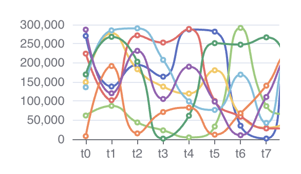

Aug 2023
Shortly after working on VeRNet at UConn's CPS Lab, I got introduced to VisTSN, another project in the works. This project uses a similar tech stack to VeRNet - Vue.js, Apache ECharts, and TypeScript. Unlike VeRNet, where most of my additions have been purely on the frontend, VisTSN has allowed me to use TypeScript and ECharts' API to fetch backend data.
The app simulates a network similar to VeRNet's, but instead of a 3D simulation, shows several charts (thank you ECharts) that depict different qualities of the network in real time, i.e. packet scheduling, event logging, and the bandwidth and delay of each node in the network. VisTSN is not currently hosted online, but will be soon!